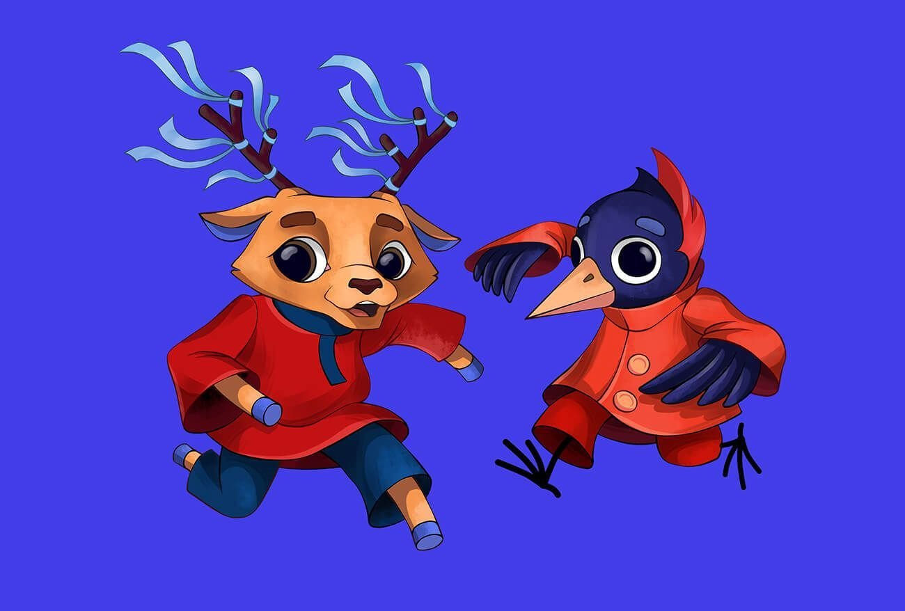
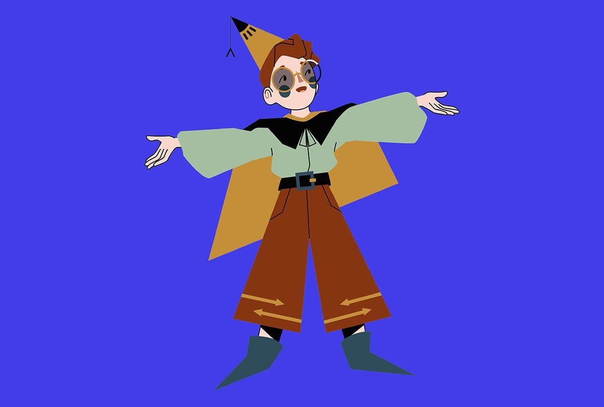
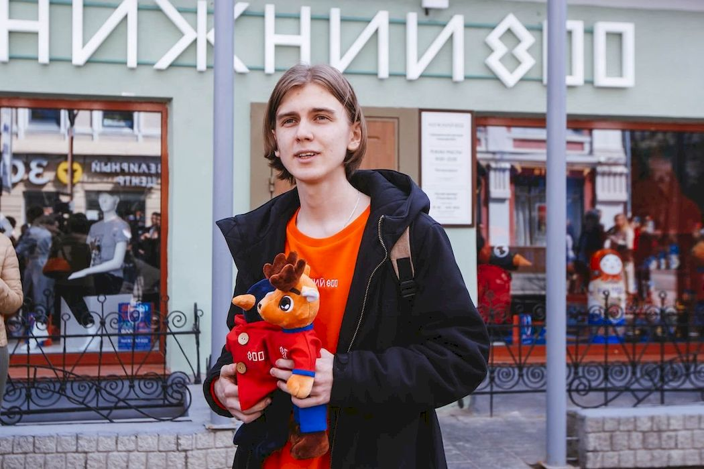
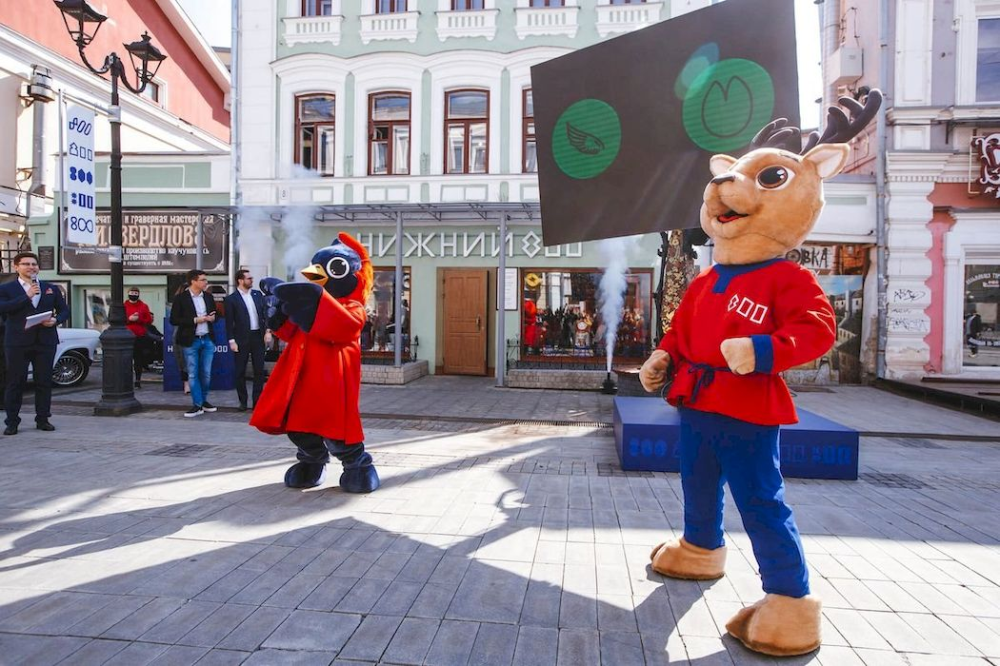
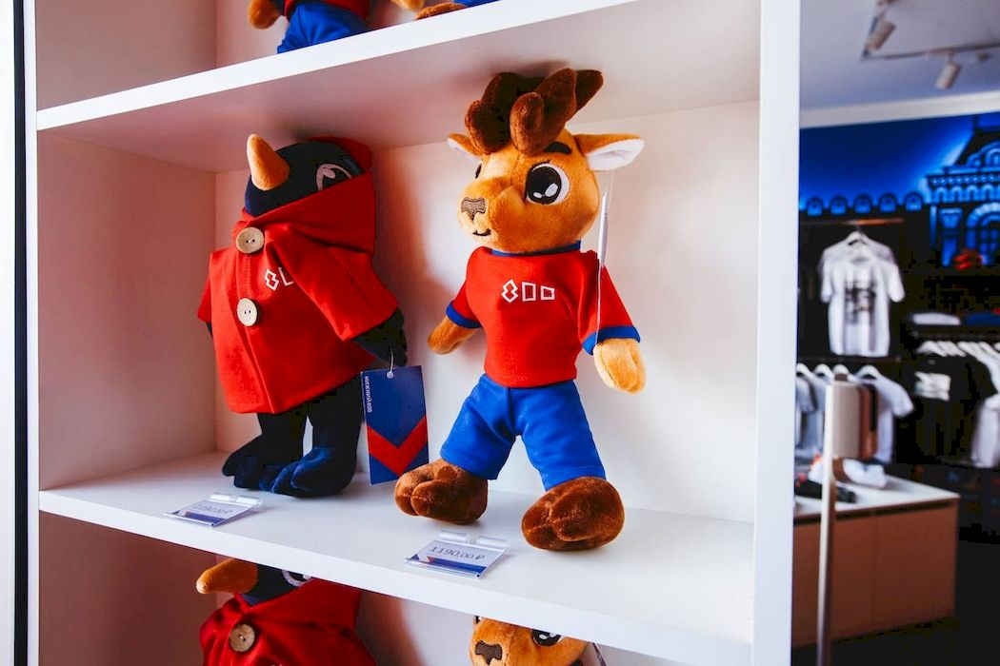

Нижний Новгород — центр Нижегородской области и столица Приволжского федерального округа, шестой по численности мегаполис России. Город расположен на месте встречи рек Волги и Оки в центральной части Восточно-Европейской равнины, в 400 километрах на восток от Москвы.
Талисманы 800-летия Нижнего Новгорода уже в городе!
7 мая 2024, 17:10
8867
Талисманы 800-летия Нижнего Новгорода — дятел Гор и оленёнок Нино — эффектно появились в городе в преддверии большого юбилея. Эти персонажи проехали по центральной улице Большой Покровской на ретроавтомобиле, а в дальнейшем их можно будет увидеть и сфотографироваться вместе на всех крупных городских событиях.
Кто придумал Талисманы 800?
Талисманы или, как их ещё называют на французский манер, маскоты (от фр. mascotte — «амулет, талисман, приносящий удачу») для Нижнего Новгорода выбирала вся страна. На конкурс эскизов, который запустили практически за год до 800-летия, прислали 221 эскиз. Рисунки предлагали как профессиональные художники, так и любители. По условиям можно было изобразить любого персонажа, связанного с историей или обликом города. Экспертное жюри выбрало 5 лучших работ, а дальше началось зрительское голосование.
Результаты народного голосования за Талисман 800
Учитывая ключевые сценарии поведения, высокое качество позиционных исследований в значительной степени обусловливает важность своевременного выполнения сверхзадачи.

Гор и НиНо
Подробнее
32.9%
Автор: Никита Киселев, Нижний Новгород
“Нино и Гор. Их имена созвучны с названием города. Поскольку праздник связан с круглой датой основания, на мой взгляд, нужно было обратиться именно к истокам. А началось всё с Дятловых гор. Отсюда и взялся первый персонаж. Но не хотелось оставлять его без друга, и в компанию к нему был добавлен Нино, ведь образ оленя неразрывно связан с многовековой историей Нижнего.
Два героя. Две реки. Две части города. Фигуры талисманов динамичны, что символизирует развитие и движение вперёд. Ленточки на рогах оленя были навеяны лентами, которые можно увидеть на Нижне-Волжской набережной. Их подвязывают на счастье к металлическим деревьям. Количество лент неслучайно, их столько, сколько и башен Кремля. А голубой цвет отсылает к рекам, на которых стоит Нижний.”
Никита Киселев
Олень Олёша
Подробнее
19.9%
Автор: Никита Киселев, Нижний Новгород
Никита Киселев
Стрелочка и Кремлёнок
Подробнее
12.9%
Автор: Никита Киселев, Нижний Новгород
“Нино и Гор. Их имена созвучны с названием города. Поскольку праздник связан с круглой датой основания, на мой взгляд, нужно было обратиться именно к истокам. А началось всё с Дятловых гор. Отсюда и взялся первый персонаж. Но не хотелось оставлять его без друга, и в компанию к нему был добавлен Нино, ведь образ оленя неразрывно связан с многовековой историей Нижнего.
Два героя. Две реки. Две части города. Фигуры талисманов динамичны, что символизирует развитие и движение вперёд. Ленточки на рогах оленя были навеяны лентами, которые можно увидеть на Нижне-Волжской набережной. Их подвязывают на счастье к металлическим деревьям. Количество лент неслучайно, их столько, сколько и башен Кремля. А голубой цвет отсылает к рекам, на которых стоит Нижний.”
Никита Киселев

Стрелка
Подробнее
32.9%
Автор: Никита Киселев, Нижний Новгород
Никита Киселев
По итогам больше всего приглянулась пара персонажей: дятел и оленёнок. Их автор — 21-летний студент ННГАСУ Никита Киселёв. Символично, что талисманы 800-летия Нижнего Новгорода придумал именно нижегородец. К слову, Никита Киселёв продумал не только внешний вид героев, но и их имена и связь с историей города.
«Я посчитал, что нужно обратиться именно к истокам. А началось все с Дятловых гор, ведь именно на них основан Нижний Новгород. Решил не отказываться и от официального символа с герба города. Так и появилась пара — олень Нино и дятел Гор. В самом имени дятла подсказка для тех, кто забыл об историческом месте и искренне не понимает, как эта птица относится к Нижнему. К тому же так я отдал дань названию города, которое он носил с 1932 по 1990 год — ГОРький. Имена лежали на поверхности — ГОРод НИжний НОвгород», — рассказал Никита.

Автор Талисманов 800 Никита Киселёв
Победителя и финалистов конкурса наградили 15 августа 2020 года. Они получили пригласительные билеты на главное шоу юбилея Нижнего и памятные призы.
Зачем нужны талисманы?
Традиция создавать маскота для крупного события пришла к нам из мира спорта. Ещё в прошлом веке спортивные команды выбирали для себя символ, который приносил бы им удачу, причём сначала такими амулетами становились реальные животные. После несчастного случая с пингвином на хоккейном турнире в американском Питтсбурге в конце 60-х, отношение к такому ритуалу поменялось. Талисманы стали рисовать, а ещё создавать костюмы, игрушки и прочие сувениры с изображением узнаваемых персонажей. Постепенно история с маскотами перешла из спортивной сферы в другие массовые мероприятия и бизнес крупных брендов.
Талисманы 800-летия — дятел Гор и оленёнок Нино — станут самыми популярными персонажами Нижнего Новгорода в 2021 году.
Где можно встретить Гора и Нино?
Впервые дятел Гор и оленёнок Нино появились перед публикой во время открытия первого флагманского магазина «Нижний 800». Герои приехали на Большую Покровскую на кабриолете «Волга» ГАЗ-21.

Эскиз двух героев, который предложил Никита Киселёв, доработали профессиональные дизайнеры. Плюшевые талисманы одеты в яркие костюмы со счастливым числом 800.
В фирменном магазине бренда 800-летия можно приобрести игрушки в виде талисманов 800. Спустя время они будут напоминать о масштабном праздновании дня рождения Нижнего Новгорода.

Талисманы 800 будут встречать гостей и принимать участие в ярких культурных событиях, а также приносить удачу нижегородцам и гостям города.
Мы используем cookie, чтобы собирать статистику и делать контент более интересным.
Также cookie используются для отображения более релевантной рекламы.
Продолжая навигацию по веб-сайту, вы соглашаетесь на использование файлов cookie.
Вы можете прочитать подробнее о cookie-файлах и изменить настройки вашего браузера.
Восстановление пароля
Введите e-mail, указанный при регистрации, чтобы мы смогли выслать инструкции по
восстановлению


{kind=link}